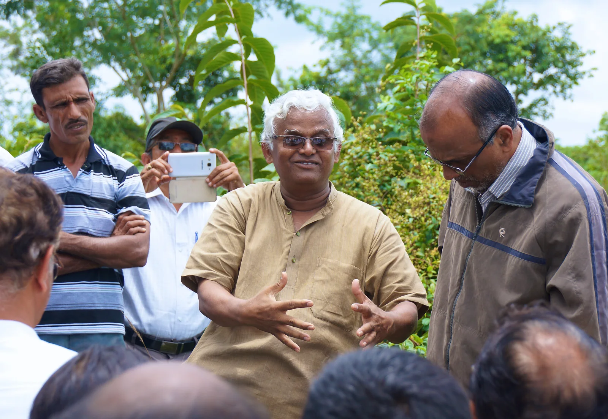

Frequently Asked Questions
What are SIRI DHANYA Millets ?
Siri Dhanya Millets are a group of highly variable small-seeded grasses, widely grown around the world as cereal crops or grains or for fodder and human food. Millets are important crops in the semiarid tropics of Asia and Africa (especially in India, Mali, Nigeria, and Niger), with 97% of millet production in developing countries. These are 'Positive Grains' that have ample fiber, nutrients, minerals, Vitamins etc.
SIRI DHANYA Millets are found only in semi arid tropics?
Not necessarily. While millets are indigenous to many parts of the world, Foxtail Millet is supposed to be growing near foot hills of Italian Alps and also found in oldest graves excavated in China. Brown Top Millet was in Americas, Little Millet was in Russia and still found in African wild. They were wide spread across all the continents Asia, Europe, Africa and America and were able to grow in all types of geographic conditions
In Indian sanskrit ancient texts, millets have been mentioned in Yajurveda too. Kangu, Kodrava, Nivara, Syamaka, Priyangu, KoraDusa are some of the millets which found place of mention. Kodo Millet grows near foothills of Himalayas. Barnyard millet is grown in Japan's valleys.
Here we are not talking about 100s of other Millet varieties which today's generation has forgotten about, which were growing in Africa or Asia or Americas.
It is unfortunate that the modern world is trying to throw away the best foods that nature had given us and got used to 'Negative grains' like Wheat and Rice that are very low in fiber, low nutrition, disease causing and mankind is suffering its consequences. Rice cultivation with water stagnation is the cause for Green House Gases production and environmental pollution.
Why SIRI DHANYA Millets seem to be a little expensive compared to regular Rice or Wheat?
No, they are not expensive in real sense. Firstly, 'Neutral grains'(They don't harm but they have less fiber) like Jowar, Bajra and Ragi are still inexpensive. But they contain less fiber (1.3, 1.2 and 3.6%). Ragi has a disadvantage of quickly turning to Glucose hence not suitable if you are a diabetic.
The MILLETS ZONE's 5 'SIRI DHANYA" millets(Fiber 8 to 12.5%) give only 4 to 6 Quintals of Grain yield per acre. (Unlike 30-35 Quintals in Rice paddy)
When you convert to them to 'Rice' by dehulling, the milling recovery rate is about 55 - 60 percent plus only.
So the present costs are not at all high compared to what good they offer and at what cost they get created.
You will eat only 60% of your Rice quantity when you come to Millets 'rice'. Think of it as saving !
SIRI DHANYA millets need special storage at home?
MILLETS ZONE's SIRI DHANYA millets are grown in totally chemicals free environment, harvested and threshed and also processed in a chemicals-free environment. The dehusking process is done in small batches carefully in order to retain full nutrition. Our de-husked grains are UNPOLISHED which needs a lot of craft and attention, particularly in grains that give you less than 50% 'rice' from unprocessed grains.
After De-husking, the 'Rice' of Millets is attractive to 'storage pest attack'. Remember, this is the best food and chemicals free. No fumigants and no storage chemicals are added to it. So, ants, insects get attracted quickly, Even in Millet grain packets, accidentally a pest larva may appear inspite of best efforts to create clean 'Rice'.
Why people have a misunderstanding that SIRI DHANYA Millets have an 'expiry date'?
Yes it is a misunderstanding. When we advise farmers or other consumers to create small batches of carefully de-husked grains for consumption, there are bigger and more meaningful thoughts behind this.
In today's world, we notice that Rice and Wheat (the so called popular staple food grains) have become the toys in the hands of greedy and powerful who have least in people's health. Millers rule the roost. Every thing is controlled by 'others' and farmers or consumers do not have much say. Such an unfortunate situation must be avoided. Dependancy on mills must go.
That is why through 'Butchi' method, we advise farmers to create unpolished de-husking processes at their own level. Whether the farmer is a 2 acre person or a 100 acre land lord, if he hires local workers and follow Butchi method, he not only creates employement to the locals but he also produces quality product for his village or a nearby town consumers.
As we said earlier, these ancient grains were stored in pots and other storage structures FOR YEARS together, in 'unprocessed or pure grain state' with out any problem. They were helping the farmers to overcome flood or famine and there is no storage pest problem for those grains in that state.
But once these organic grains are processed, they become attractive to storage epests. That is why we advise people to procure smaller quantities, process smaller batches and consume them in 30 to 60 days maximum.
The 'EXPIRY DATE' theory is totally baseless. Store the de-husked grains in refrigerator if it is necessary to store for longer durtion to avoid pest problem.
Why the SIRI DHANYA disappeared from our meals in recent decades?
Let us wake up the people, let us educate them to eat Siri Dhanya and encourage more of Siri Dhanya farming in pure organic methods. Millets can solve the world problems in several ways.
What are the best ways to consume 'Siridhanya' and any surprises in the 'colors' of Siridhanya?
Dr Khadar always suggests for great results in seriously fighting diseases, for first 10 weeks, using recommended Siridhanya as 'Ambali' 'Ganji' or 'mashed fermented broth' . (Importantly do not throw away any solid/liquid part of it)
For 30 sec to 1minute, grind the SiriDhanya roughly. (or if you are stomach sensitivity, you may use flours) Then, Pre-soak Siridhanya for 5 to 7 hours using 1: 7 water (cook in same soaking water) and cook more than usual, mash it thoroughly, Keep a lid on it (or tie a handwoven cloth) for 12 hours and consume the semi liquid broth(Ambali) after 12 hours with all vegetables and curries, Dal & little pickle, buttermilk etc- as you wish.
This method is very effective in producing best results with all diseases. Example, if you have a patient highly constipated and using ENEMA for the past 10 years, if he consumes Browntop MIllet in this fashion, he will get natural stools from 4 th /5 th day. But ofcourse, you can prepare 'rice', rotis, all sorts of dishes with Siridhanya with no sacrifice on taste front. One truth must be repeated here: Those who eat Siridhanya for 6 months or a year, will not cherish Rice or Wheat like in the earlier times of their life.
For new consumers, one more POINT TO REMEMBER: Siridhanya like Kodo millet and Browntop millet let out some color in to the soaked water. Do not be apprehensive thinking that it is artificially 'added' color. No, it is natural. Kodo Millet gives out Brick Red color and Browntop millet gives out green tinge to the water. So, wish you all the health from 'Unpolished' Siridhanya.
How can SIRI DHANYA help solve the world problems?
Siri Dhanya Millets are the Positive Grains. They do lots of good to mankind by removing diseases. Today's Wheat and Rice are Negtive Grains. They cause many illnesses.
Siri Dhanya need only very few resources and yet they give humans the best food possible.
WATER : To produce 1 Kg of Millet grain , you spend 300 Liters of water where as to produce 1 Kg of Rice Paddy grains or Wheat, you need 8,000 to 9,000 liters of water. To produce 1 Kg meat, you will spend 60,000 liters of water. Can't you see the superiority of Millets?
SOIL : Millets grow in any kind of soil. Even in worst soils it grows and gives harvests. The other grains need fertile soils only.
FERTILISER : Millets require no artificial fertilization. If you can afford, you may give organic natural manures. But other grains need huge quantities of chemical fertilisers and pesticides and end up being harmful to human health, soils and water.
NUTRITION : Millets give us the best nutrition apart from carbohydrates. High protein, minerals and Vitamins, essential Amino acids, fatty acids and Dietary fiber. Yes, they are the best food. Rice Paddy and Wheat are no match to Millets and have lots of harmful affects on adults by providing Carbohydrates that quickly turn to Glucose and get released in to blood and put our systems in difficulty. Fiber in Rice and Wheat is very low and does not meet food fiber requirements of humans. Wheat and Rice are also low in micro nutrients and are processed in to worst foods & they are the cause of many diseases in modern world.
HEALTH : Now it is an established fact that the whole world is facing many many health challenges because of Fibre-less foods. It is also clear to 1000s of patients that all the lifestyle diseases can be made to disappear just by eating Siri Dhanya Millets for Breakfast, lunch and Dinner and removing harm ful foods like Rice, Wheat, refined flours, Processed meats, refined oils, packed & ready to consume -kind of foods and milk. (Home made Yoghurt or Buttermilk are okay) and refined sugars. Now, imagine a world with super abundant Millets foods & with great soil health, Human health and ground water health at its top form.
Siridhanya do not require any fertilizers or pesticides. They need no investment.
Thus by adopting millets as our staple food, the city dwellers will be helping the small dry land farmers and greatly contributing towards conservation of water and environmental sustainability , since food is the one thing that every human consumes three times every single day.
Can SIRI DHANYA Millets solve Health Problems of Humans?
Yes, Definitely, says Dr Khader, a well known scientist, Social worker and a doctor from South India.
Years of his relentless efforts and research have proved with 1000s of patients suffering from Diabetes, Gangrene, Hypertension, triglycerides, Convulsions, Asthma, Rheumatism, Tumors, Cancers, Gynaec problems, Bone development, nervous disorders have significantly benefitted from SIRI DHANYA millets. That is why he tours, delivers lectures to Farmers, Housewifes, scientists, academicians, Universities, Legislators, Doctors, Managers, Officers and students informing about the greatness of Millets and the need to bring them back in to our food, because the benefits are immense.
For example when they found that in india the sales of calcium tablet are very less ...the reason they found was that we all have have the habbit of eating curd/home made yoghurt...so they started spreading wrong info that curd will increase cholesterol....this is just one example ...They tried the same with our good old Ground nut oil. They tried to push their Sunflower and harmful Soyabean oil and now, recently the Canola oil (which actually is Rapeseed oil which is unfit for human consumption). Also where do all these chemical laden and blended refined oils of today come from? Where were they in India 7-8 years before? Why no one questions them? Thirdly ....we are not asking people to eat only one grain....they say these things against fox tail millet...not all millets...that too when they studied some african communities who are predominantly meat eaters and Sorghum millet eaters. We ask people to eat all the 5 crops available...5 SIRI DHANYA millets.....one daily or one per meal...when we depend on so many grains as a staple..we will get the goodness of all and the deficient nutrients of one will be balanced by the others....There are many such individuals who have been eating millets since decades and regular Rice is just a rare occasion food for them. They are very healthy. Thousands have been cured of diseases like Thyroid while eating them. Ignorantly, We are depending on wheat and Rice paddy alone which have much more bad effects on all our health...nothing is being said of these...Nearly 30 crores (300 million) Indians are affected by Diabetes alone. Have you ever come across one article that was written about the ill effects of Rice or Wheat? I don't think you did. Funny isn't it? If 3% of population gets affected by a disease, Health officials take it seriously. But here 25% of the population is affected. Diabetes can cause 10 more serious diseases in people. But no one is bothered !
Can you give us some more info on 'Whole grain Siri Dhanya' vs the problem of Diabetes and triglycerides ?
Undoubtedly Siri Dhanya are the winners. In fact, research evidence continually shows that a high intake of most of whole grains reduces the risk of type 2 diabetes as much as 21-30%.
Researchers conducting a 2013 meta-analysis of 16 studies exploring the association between whole grain intake and type 2 diabetes concluded that “a high whole grain intake, but not refined grains, is associated with reduced type 2 diabetes risk.” They suggest the consumption of at least two servings daily of whole grains to reduce type 2 diabetes risk. More recent research suggests a relationship between whole grain intake and insulin action.
Researchers found that the whole grain group had significantly lower levels of post-meal insulin (29%) and triglyceride levels (43%) than before the 12-week test period, thus reducing the risk for heart disease and type 2 diabetes.
Based on these findings, the researchers suggest that “the whole-grain diet was able to improve insulin action” after meals, thus providing clues about how whole grain diets reduce the risk of chronic disease.
Here we have 'Dehulled Whole Grain Siri Dhanya' which have an amazing quantity of 8 to 12.5% fiber in them . You can only thank nature for such wonderful food grains. Siri Dhanya are great food for all mankind and they can grow in many geographical and different climatic conditions.
MORE on the problem of Type II Diabetes and co-relation to our foods :
Let me share some info about the type II Diabetes and co-relation to our foods:
Today's wheat foods and Rice foods have very little (much less than 1% ) fibre. Refined flours are much worse because of various bleaching agents inherent to them (They ruin the beta cells of Pancreas). So , the Fibreless carbs will turn to Glucose in a very short time - like in 20-40 minutes and great amounts of Glucose gets pumped in to blood. Conditions get worse if you eat more of such foods(burger, pizza, Biscuits, bread, cakes, sweets) 5-6 times a day along with sugary drinks 5-6 times a day. The proportional insulin demand also goes higher. As long as your Pancreas produces enough insulin things will be okay. As long as your cells don't develop insulin resistance, things will be okay. If some antibiotic ruins your pancreas or a procedure like surgery ruins your pancreas or if your insulin production gets affected due to age or other factors; Diabetes condition appears. Also grief (loss of loved ones, love life), work tensions (sales guys), over ambition, business losses; Anger, vengeful thinking, Depression ; such high range of emotions can ruin your pancreas's efficiency and result in Diabetes.
A continuous 75 minutes of walk results in total usage of Glucose in your total blood 6-7 grams and calls for converting stored Glucose (Glycogen, lipids& triglycerides ) back to Glucose form and spend it. This is a healthy process.
So now we know how to increase chances of quick Glucose release or reduce the possibilities of quick Glucose release in to blood. Vegetables and greens do not create Glucose quickly. They are ideal for good health. SIRI DHANYA, our ANCIENT MILLETs with low Glycemic index do not release Glucose in large quantities due to high fibre (8 to 12.5%) content. They take 5 to 7 hours to release Glucose slowly and in small quantities So they are the best carbs with better nutrients than Rice & Wheat. Type II can be better managed taking in to consideration these factors. One may even keep away Type II Diabetes and even cure it altogether by taking the required steps.

Links from this page
Content captured 25 October 2026. Reorganized for reading; purchase-related material excluded.